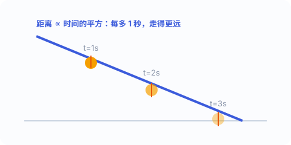

一、重的先落地？不一定
两千年来，大家相信亚里士多德的说法：越重的东西下落越快。伽利略却怀疑这一点。他论证：如果“重得快”成立，那么把重物和轻物绑在一起，既会因“更重”而更快，又会因“轻的拖后腿”而更慢——自相矛盾。
他的结论是：在忽略空气阻力时，所有物体不论轻重，都以相同的加速度下落。这就是自由落体的核心。传说他在比萨斜塔上同时丢下轻重不同的球来证明——这个故事真假难辨，但结论本身，他用更可靠的实验坐实了。
二、把“快”放慢：斜面实验
自由下落太快，当时的计时工具根本测不准。伽利略的妙招是：让铜球沿斜面滚下。斜面越缓，球越慢，时间就被“拉长”，便于测量。

他改变斜面的倾角，记录球走完全程的用时，再改变“走一半、走四分之一”的用时。结果发现：球走过的距离，和所用时间的平方成正比。由此反推，真正的自由下落也遵循同样的规律。
三、最关键的公式：s = ½·a·t²
伽利略最了不起的一步，是给出了位移与时间平方成正比的定量关系：下落距离 s = ½·a·t²（a 是加速度）。
这意味着什么？如果第 1 秒落下 1 份距离，那么前 2 秒落下 4 份、前 3 秒落下 9 份……越往后，每一秒里掉得越猛。物体并不是“匀速变快一点点”，而是速度随时间线性增加——这定义了加速度：a = 速度变化量 ÷ 时间。
“匀加速”指加速度恒定：每秒钟速度的增量都一样。伽利略发现自由落体正是匀加速运动——这是人类第一次把“变化的速度”本身当作研究对象。
把匀速运动（速度不变）和匀加速（速度随时间线性增长）分开，再研究它们如何合成，伽利略还解释了抛体运动：平抛的物体一边匀速前进、一边匀加速下落，合起来走出一条抛物线。
四、比萨斜塔的传说与真相
“伽利略在比萨斜塔扔铁球”的故事广为流传，但史料并不能确证他真这么做过。不过，他当时确实在比萨大学，也确实用推理加斜面实验得出了“轻重同落”的结论。
重点不在塔，而在方法：用可重复的观测和数学，取代“权威说过什么”。这正是他留给后世最贵的东西。
五、为什么这很重要
在伽利略之前，运动被当作混乱、不可言说的现象。他之后，运动成了可以用公式写下来的东西：速度、加速度、位移、时间，彼此有确定的数学关系。
一句话记住：物体下落的快慢，和它有多重无关；它掉下的距离，和时间的平方成正比。伽利略让“运动”第一次有了数学语言。